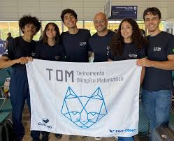
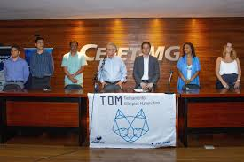

O TOM, ou Treinamento Olímpico Matemático, é um programa desenvolvido pelo CEFET com o objetivo de preparar
estudantes para competições de matemática em diferentes níveis, incluindo olimpíadas regionais, nacionais e
internacionais. Voltado principalmente para alunos do ensino médio e técnico, o treinamento busca
desenvolver habilidades avançadas de raciocínio lógico, análise crítica e resolução de problemas complexos.
Durante as aulas, os participantes têm a oportunidade de estudar tópicos que vão além do currículo
tradicional, como combinatória, teoria dos números, geometria avançada e álgebra abstrata. O ambiente do TOM
é altamente estimulante, pois incentiva o trabalho
colaborativo, a troca de ideias e a discussão de
diferentes métodos de resolução.
Além disso, o programa valoriza a prática contínua por meio de listas de exercícios, simulados e provas
anteriores de olimpíadas, permitindo que os alunos aprimorem suas estratégias e ganhem confiança em
situações de prova. O treinamento também oferece orientação individualizada, ajudando cada estudante a
identificar seus pontos fortes e a melhorar nas áreas que apresentam mais dificuldade.
O TOM tem se destacado pelo alto desempenho de seus participantes em competições, refletindo a qualidade do
ensino e a dedicação dos alunos. Mais do que apenas ganhar medalhas, o programa busca despertar a paixão
pela matemática, estimulando o pensamento crítico e a criatividade na resolução de problemas.
Outro ponto importante do TOM é a preparação para a vida acadêmica e profissional, pois os conhecimentos
adquiridos vão além das olimpíadas, contribuindo para o desenvolvimento intelectual e para a formação de
futuros cientistas, engenheiros e pesquisadores.
Participar do TOM exige disciplina, curiosidade e persistência, mas oferece recompensas significativas em
termos de aprendizado e realização pessoal. Muitos ex-alunos do programa relatam que o treinamento não só os
preparou para competições, mas também fortaleceu suas habilidades de raciocínio lógico, planejamento e
trabalho em equipe, competências valiosas em qualquer área do conhecimento.
Em resumo, o Treinamento Olímpico Matemático do CEFET é uma oportunidade única para estudantes que desejam
se desafiar, expandir seus horizontes matemáticos e conquistar resultados expressivos em competições,
enquanto desenvolvem habilidades essenciais para a vida acadêmica e profissional.
COMO POSSO PARTICIPAR DA TOM?
Atualmente, estando presente nos Campus de Divinópolis e Belo Horizonte, o meio para poder fazer parte da TOM
é o PROCESSO SELETIVO